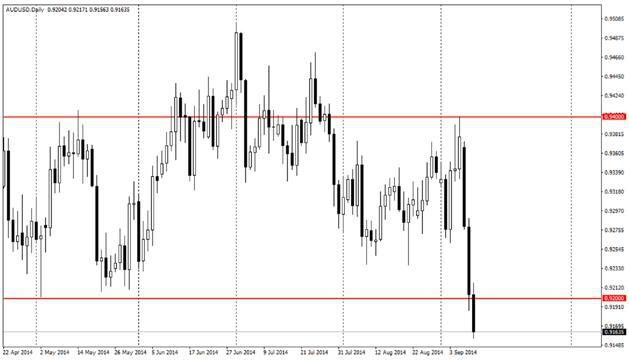
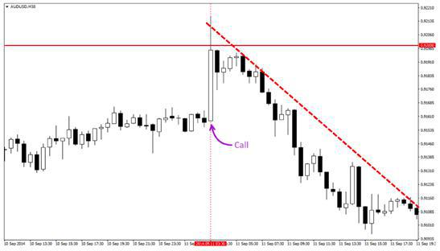
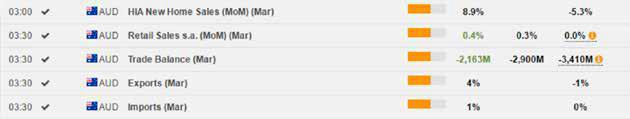
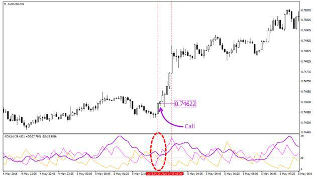

4. Сочетание видов анализа
Каждый трейдер должен обладать полным пониманием происходящего на рынке, в том числе, правильно интерпретировать показатели новостных индикаторов. По этому признаку людей можно разделить как минимум на два типа. Чаще всего встречаются «игроки» – трейдеры, которые становятся весьма сфокусированы на том, какие фундаментальные события заставляют рынок расти и пытаются войти в рынок тогда, когда уже слишком поздно. Да, рынком движут кратковременные настроения. В то же время, рынки постоянно меняются, поэтому трейдеры, полагающиеся только на один вид анализа могут быть легко сбиты с толку.
Рассмотрим сочетание графического и фундаментального анализа на следующем примере. На дневном графике AUD/USD мы наблюдаем формирование сильного уровня сопротивления в районе 0.9400-0.9450 после предшествующего продолжительного восходящего движения. Это говорит о том, что рынок не может набрать достаточной силы импульса для продолжения движения вверх, поэтому вынужден находится в состоянии консолидации. Также тремя минимумами на графике был сформирован круглый уровень поддержки в районе 0.9200, который будет играть весьма важную роль при входе в позицию.

Чтобы вывести цену из состояния равновесия (консолидации), достаточно даже небольшого внешнего стимула.
Пользуясь некоторыми свечными моделями, также можно определить момент пробоя уровня, но проблема заключается в том, что такой способ дает гораздо больший процент ложных сигналов. Все это грозит потерей средств.

10 сентября цена все-таки пробивает уровень поддержки на 0.9200. Говорить о смене тренда пока рано, но это не главное. Главное то, что теперь уровень поддержки потенциально может стать уровнем сопротивления.
Следующим утром, 11 сентября, выходят данные по уровню безработицы в Австралии. Индикаторы показали уменьшение уровня безработицы и увеличение числа рабочих мест. Опережение прогнозов, как правило, ведет к повышению курса.
Если бы мы торговали только по фундаментальному анализу, то купили бы опцион Сall в расчете собрать прибыль с хороших данных по безработице в Австралии. Но графический анализ подсказывает нам, что сначала нужно дождаться пробоя нового уровня сопротивления, и только после этого покупать опцион вверх. Каков итог? Смотрите:

Буквально через несколько часов после выхода новости «бычьи» настроения поугасли, и цена продолжила уверенное движение вниз, так и не пробив нового уровня сопротивления. Так графический анализ помог расшифровать, насколько сильно новости по безработице в Австралии повлияют на рынок.
Важно разбираться в поведении толпы и понимать основные принципы ценобразования. Вы уже знакомы с работой самых распространенных технических индикаторов, поэтому, дальше пойдет рассказ о том, как на эти индикаторы влияет психология рынка. Если нет, то вам нужно пройти раздел «Технический анализ».
Перед началом торговли смотрим в экономический календарь и отмечаем сразу группу положительных индикаторов по австралийцу – явный признак роста. Неувязка заключается в том, что австралиец находится в продолжительном нисходящем тренде, поэтому здесь нужно быть крайне аккуратным.

Чтобы убедится в смене приоритетов на бирже, мы будем использовать стандартный технический индикатор ADX. Индикатор позволяет произвести статистическую оценку первой реакции игроков на поступившие данные и, соответственно, выбрать наиболее безопасный момент для входа.
После выхода данных по рынку недвижимости ждем открытия новой свечи. Линия +DI индикатора ADX пересекает -DI вверх, что говорит о возможной смене направления тренда. Главная линия индикатора, в свою очередь, помогает определить силу движения. Так как значение ADX выше 20, мы имеем дело с трендом слабой силы. Как только ADХ становится выше 30, это сигнал к началу сильного тренда.

Так как в течении получаса выходит новая порция данных по австралийцу, тенденция на рынке может очень резко поменяться. Поэтому время экспирации желательно выбирать небольшое, чтобы контракт был исполнен до выхода следующей новости. Так с помощью индикатора ADX мы смогли определить, что новости достаточно сильно повлияли на рынок, а с помощью фундаментального анализа — в какую сторону начинается тенденция.